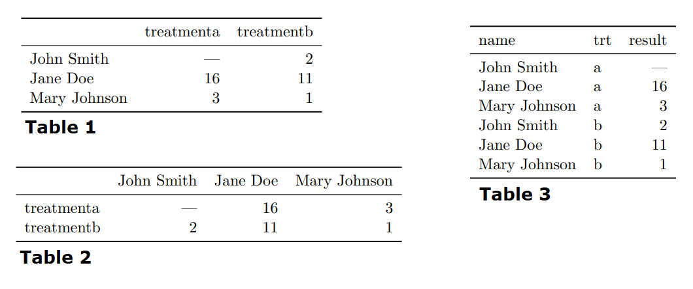
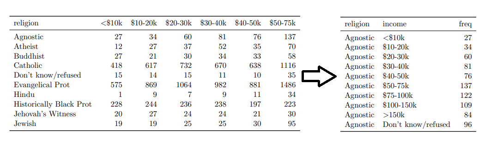
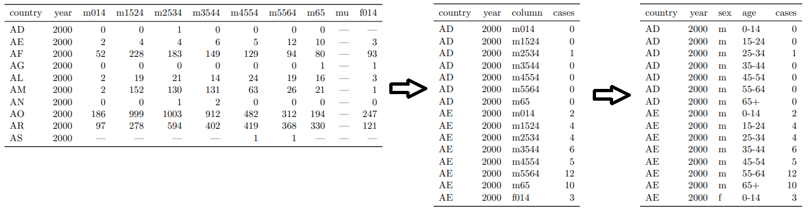

Tidy Data: structure and semantics of data
Summary of data best practices (tidy data + relational database management) and reflections for SALURBAL.
These ideas and examples are from Wickham (2014) and Codd’s Rules for Relational Database Systems.
Introduction
It is often said that 80% of data analysis is spent on the process of cleaning and preparing the data. Data preparation is not just a first step, but must be repeated many over the course of analysis as new problems come to light or new data is collected. Despite the amount of time it takes, there has been surprisingly little research on how to clean data well.
The principles of tidy data provide a standard way to organise data values within a dataset. A standard makes initial data cleaning easier because you don’t need to start from scratch and reinvent the wheel every time. The tidy data standard has been designed to facilitate initial exploration and analysis of the data, and to simplify the development of data analysis tools that work well together.
The principles of tidy data are closely tied to those of relational databases and Codd’s relational algebra (Codd 1990), but are framed in a language familiar to statisticians.
Characteristics of a tidy dataset
Structure
- Datastructure describes the physical layout of a dataset.
- Datasets are rectangular tables made up of rows and columns.
- Columns are almost always labeled, rows are sometimes labeeled.
Semantics
- The semantics of a dataset describe its meaning
- A dataset is a collection of values.
- Values are organized in two ways. Every value belongs to a variable and an observation.
- A variable contains all values that measure the same underlying attribute (like height, temperature, duration) across units.
- An observation contains all values measured on the same unit (like a person, or a day, or a race) across attributes.

Above dataset is shown in three different structures. Table 3 reoragnizes the data to make the values, variables and observations (semantics) more clear. The dataset contains 18 values representing three variables and six observations. Variables name - person, trt treatment and result value of some test. The observation depends on the exerpiemtnal design which in this case is a completely cross design, so the obervation type for this table is crossed (person, treatment).
Note in a given analysis, there may be multiple levels of observation. For example, in a trial of new allergy medication we might have three observational types: demographic data collected from each person (age, sex, race), medical data collected from each person on each day (number of sneezes, redness of eyes), and meterological data collected on each day (temperature, pollen count).
It is important to keep in mind the meaning/semantic (observations and variables) of your data when designing dataset structure (rows and columns).
Tidy data
Tidy data is a standard way of mapping the meaning of a dataset to its structure. A dataset is messy or tidy depending on how many row, columns and tables are matched with observations, vairables and types. In tidy data:
- Each variable forms a column
- Each observation forms a row
- Each type of observational unit forms a table.
These rules are just Codd’s 3rd normal form but framed in statistical language and focusing on a single dataset rather than interconnection. Messy data is any other arrangement of the data.

Table 3 is the tidy version of these data. Each row represents an observation, the result of one treatment on one person, and each column is a variable.
Tidy data makes it easy for a computer to extract needed variables because it provides a standard way of structuring a dataset. Compare Table 3 to Table 1: in Table 1 you need to use different strategies to extract different variables. At the end of the day, the order of variables and observations (tidy vs messy) may not effect the results of an analysis, but tidy data is immediately machine actionabl, thus reusable, interoperable nd suited for performant vectorized computing - aka it will save you a lot of man hours!
A good way to design your datasets (what are observations and what are variables), is to think about their role in the analysis: are values fixed by the design of the data collection, or are they measured during the course of the experiment? Fixed variables describe the experimental design and are known in advance. Computer scientists often call fixed variables dimensions, and statistician usually denote them with subscripts. Measured variables are what we actually measure in the study. Fixed variables should come first, followed by measured variables, each ordered so that related variables are contiguous. Rows can then be ordered by the first variable, breaking ties with the second and subsequent (fixed) variables. This is the convention adopted by all tabular displays in this paper.
Examples of common messy data
Column headers are values, not variable names
While this raw format is very useful for some applications (e.g.good format for data entry, or matrix calculations) it is not machine actionable or tidy; to tidy it we need to pivot it making the dataset longer.

Multiple variables stored in one column
After you pivot your data, one common issue is that column variable names becomes a combination of multiple underlying variable names. Here we need to decompose this into its individual variables.

Multiple types in one table
Within a project, data is available at multiple levels, on different types of observational units. During tidying, each type of observational unit should be stored in its own table. This is closely related to the idea of database normalisation, where each facet is expressed in only one place. [[case3.png]]
The Billboards data is an example of this type of messiness. The raw dataset contains two types of observations (song) and (song rank each week), this manifests as duplications of facts about the song: artist and time are repeated for each everysong in the week. This can be broken down into seperate tables aka database normalization.
Note that Normalisation is useful for tidying and eliminating inconsistencies. However, there are few data analysis tools that work directly with relational data, so analysis usually also requires denormalisation or the merging the datasets back into one table.Normalisation is useful for tidying and eliminating inconsistencies. However, there are few data analysis tools that work directly with relational data, so analysis usually also requires denormalisation or the merging the datasets back into one table.
One type in multiple tables.
It’s also common to find data values about a single type of observational unit spread out over multiple tables or files. These tables and files are often split up by another variable, so that each represents a single year, person, or location. As long as the format for individual records is consistent, this is an easy problem to fix via importing, merging and oeprationalizeing file-name metadata.
Reflections for SALURBAL
- Codd’s 4th rule is key: “Metadata (data about the database) must be stored in the database just as regular data is.”
- Data is largely useless without metadata. Unfortunately, SALURBAL metadata is loaded with complexity.
- The strength of SALURBAL, is harmonized multi-national, multi-year, multi-source data repository.
- This strength is also unfortunate the source of a lot of difficulties for data management.
- Due to the variability in metadata (public-access, data-source … ETC) within variables, it is key to have data point level observational units when tidying data.
- Having metadata available at the data point level is the only way to capture the complexities of our metadata and enable us to make our data more open while adhering to legal obligations such as DUAs.